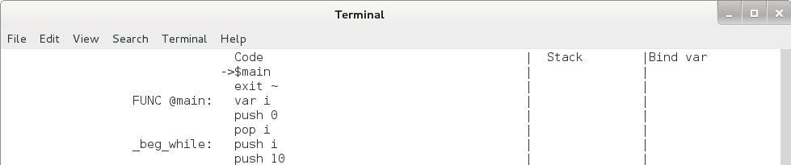

前面 3 章介绍了 TinyC 编译器的源程序 TinyC 和中间代码 Pcode 的语法结构，介绍了部分 Pcode 命令和 TinyC 语句的对应关系，本章介绍如何手工将 TinyC 源程序翻译成 Pcode ，因为只有我们对翻译的过程和细节都了如指掌后，才可能编写出程序来进行自动翻译。
函数定义的翻译在上一章其实讲的差不多了，函数的开头和结尾分别改成 FUNC 和 ENDFUNC 就可以了，FUNC 后接 @ + func_name + ”:” ，若函数有参数，则在函数体的第一行加 arg + 参数列表，具体如下：
TinyC：
int foo(int a, int b) {
...
}
Pcode：
FUNC @foo:
arg a, b
...
ENDFUNC
变量声明直接将 TinyC 的 int 改成 var 就可以了。
赋值语句的左边为变量名，右边为表达式，先将表达式转换成后缀表达式，再按顺序翻译相应的 Pcode ，最后在加一个 pop var_name：
赋值语句：
a = 1 + 2 * b / sum (5, 8);
逆波兰表达式：
1 2 b * 5 8 sum / +
Pcode：
push 1
push 2
push b
mul
push 5
push 8
$sum
div
add
pop a
注意对于自定义的函数，需在函数名前面加 $ 。
可以看出对于复杂一点的表达式，人工将其转化成正确的后缀表达式是很困难的，必须借助计算机程序来做这件事了，这个就留给我们的 TinyC 编译器吧。
函数调用语句其实在上面的表达式转换中就有了，先从左向右将参数入栈，再调用函数，若参数是一个表达式，则先将这个表达式翻译成 Pcode 。
TinyC:
foo(1, a, sum(b, 5));
Pcode：
push 1
push a
push b
push 5
$sum
$foo
pop
注意最后的 pop 是为了将 foo 函数的返回值出栈的，因为这个值以后都不会再被使用到。如果函数调用是在表达式的内部，则不需要使用 pop 。
if 和 while 语句利用 jz 和 jmp 命令就可以实现，首先看 if 语句：
TinyC：
if (a > 0) {
print("a is a positive number");
} else {
print("a is a negative number");
}
Pcode：
_beg_if:
; test expression
push a
push 0
cmpgt
jz _else
; statements when test is true
print "a is a positive number"
jmp _end_if
_else:
; statements when test is false
print "a is a negative number"
_end_if:
可以看出上述 Pcode 有固定的结构型式，将测试语句和两个执行体翻译成 Pcode 放到相对应的地方即可。
再来看 while 语句：
TinyC：
while (a > 0) {
a = a - 1;
}
Pcode：
_beg_while:
; test expression
push a
push 0
cmpgt
jz _endwhile
; statements when test is true
push a
push 1
sub
pop a
jmp _beg_while
_end_while:
结构也很简单，将测试语句和执行体翻译成 Pcode 放到相对应的地方即可。
continue 和 break 呢？将 continue 换成 jmp _beg_while，break 换成 jmp _end_while 就可以啦。
对于有多个 if / while ，以及有嵌套 if / while 语句，就要注意对同一个 if / while 语句块使用同一个Label，不同的语句块的 Label 不能冲突，continue 和 break 要 jmp 到正确的 Label ，这些工作人工来做显然很困难也容易出错，留给我们的 TinyC 编译器吧。
最后让我们用第 2 章的典型程序来练习一下吧：
TinyC：
#include "for_gcc_build.hh" // only for gcc, TinyC will ignore it.
int main() {
int i;
i = 0;
while (i < 10) {
i = i + 1;
if (i == 3 || i == 5) {
continue;
}
if (i == 8) {
break;
}
print("%d! = %d", i, factor(i));
}
return 0;
}
int factor(int n) {
if (n < 2) {
return 1;
}
return n * factor(n - 1);
}
Pcode：
; int main() {
FUNC @main:
; int i;
var i
; i = 0;
push 0
pop i
; while (i < 10) {
_beg_while:
push i
push 10
cmplt
jz _end_while
; i = i + 1;
push i
push 1
add
pop i
; if (i == 3 || i == 5) {
_beg_if1:
push i
push 3
cmpeq
push i
push 5
cmpeq
or
jz _end_if1
; continue;
jmp _beg_while
; }
_end_if1:
; if (i == 8) {
_beg_if2:
push i
push 8
cmpeq
jz _end_if2
; break;
jmp _end_while
; }
_end_if2:
; print("%d! = %d", i, factor(i));
push i
push i
$factor
print "%d! = %d"
; }
jmp _beg_while
_end_while:
; return 0;
ret 0
; }
ENDFUNC
; int factor(int n) {
FUNC @factor:
arg n
; if (n < 2) {
_beg_if3:
push n
push 2
cmplt
jz _end_if3
; return 1;
ret 1
; }
_end_if3:
; return n * factor(n - 1);
push n
push n
push 1
sub
$factor
mul
ret ~
; }
ENDFUNC
够长把，写完后是不是觉得很累？将以上代码另存为 factor.asm，存在终端当前目录（此目录中需有 pysim.py 文件），在终端中输入：
$ python pysim.py factor.asm -a
注意以上最后的命令行参数是 -a。输出：
1! = 1
2! = 2
4! = 24
6! = 720
7! = 5040
那个 -a 是干什么用的？让我们改成 -da 看看：
$ python pysim.py factor.asm -da
终端内容如下：
图5.1 factor.asm程序单步执行界面
可以看到在模拟器自动在程序的第 1 、 2 行添加了 $main 和 exit ~，这就是 -a 和 -da 的作用。这样模拟器就会默认以 main 函数为入口了。
第 5 章完
{kind=link}